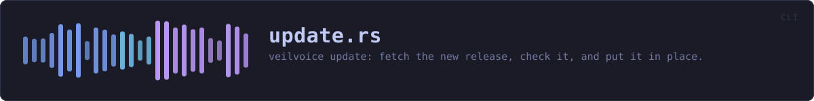

crates/veilvoice-cli/src/update.rs
veilvoice-cli · 246 lines · read the source here · or on GitHub
veilvoice update: fetch the new release, check it, and put it in place.
Roadmap item 179. Everything that decides anything is in veilvoice_verify::update, and this file is the terminal in front of it: it prints what is happening, asks for the app lock when the machine has one, and turns the result into an exit status. Nothing here fetches, checks or replaces, so the window doing the same thing later does not get a second implementation of any of it.
Why it asks before it starts, and only then
The passphrase is collected once, before anything is downloaded, because veilvoice_verify::update::perform refuses a locked machine without one and there is no sense downloading eighty megabytes to be told so. It is never collected where an app lock is not set: a program that asks for a passphrase it has no use for is teaching people to type one at whatever asks.
--check is the old behaviour, kept
veilvoice update --check reports the version and does nothing else, which is exactly what the desktop button did before this existed. Somebody who wants to know and then decide for themselves is not being made to update, and the account of what a version number on a page is worth is printed with it.
WHAT THIS FILE CONTAINS
246 lines defining 3 functions (1 public), 0 types and 0 constants. Everything below is read out of the source, so it cannot disagree with the code.
What happens when it runs. These are the ways in: public, and nothing else in this file calls them, so they are what an outside caller reaches first.
runline 35 · Run the command.
reachesconfirm,describe
WHAT CALLS WHAT
The functions this file defines, and the calls between them. An edge means the callee's name appears, called, inside the caller's body. This is a syntactic reading, not a type-resolved one.
The same graph as Mermaid source
%%{init: {"theme":"base","themeVariables":{"background":"#1a1b26","primaryColor":"#1f2335","primaryTextColor":"#c0caf5","primaryBorderColor":"#7aa2f7","secondaryColor":"#16161e","tertiaryColor":"#16161e","lineColor":"#737aa2","textColor":"#c0caf5","mainBkg":"#1f2335","nodeBorder":"#7aa2f7","clusterBkg":"#16161e","clusterBorder":"#2f3549","fontFamily":"ui-monospace, SFMono-Regular, Consolas, monospace","fontSize":"14px"}}}%%
flowchart TD
n_run(["run<br/>line 35"])
n_describe["describe<br/>line 159"]
n_confirm["confirm<br/>line 175"]
n_run --> n_confirm
n_run --> n_describe
click n_run href "https://github.com/tilas01/veilvoice/blob/main/crates/veilvoice-cli/src/update.rs#L35" "open the source"
click n_describe href "https://github.com/tilas01/veilvoice/blob/main/crates/veilvoice-cli/src/update.rs#L159" "open the source"
click n_confirm href "https://github.com/tilas01/veilvoice/blob/main/crates/veilvoice-cli/src/update.rs#L175" "open the source"
classDef entry fill:#1f2335,stroke:#7aa2f7,color:#c0caf5
class n_run entry
classDef helper fill:#1f2335,stroke:#bb9af7,color:#c0caf5
class n_describe,n_confirm helperThis site loads no third-party script, so it cannot run Mermaid; the diagram above is the same nodes and edges drawn by the generator instead. GitHub renders the source below directly.
ITEMS
| Item | Line | Documentation |
|---|---|---|
run pub fn | 35 | Run the command. |
describe fn | 159 | One line per step, in the present participle, because it is printed as the step begins rather than after it. |
confirm fn | 175 | Ask before replacing the program the person is running. |